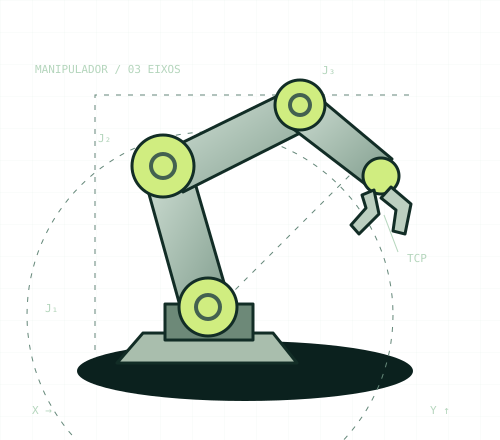

Da primeira ideia ao movimentoEntenda.
Entenda.
Experimente.
Chegue preparado.
Uma trilha para transformar as aulas de robótica em conhecimento que você consegue explicar e aplicar.

ELOS · JUNTAS · MOVIMENTO04PDFs como base
30capítulos explicados
71questões comentadas
06experimentos interativos
Escolha seu próximo passo.
Revisão rápida →Uma trilha com direção
Ordem de estudo, sessões sugeridas e objetivos para cada etapa.
A teoria, com contexto
Todos os capítulos em um caderno completo, com exemplos e fontes.
Aprenda fazendo
Doze atividades guiadas e um projeto autônomo com roteiro preenchível.
Pratique com feedback
Filtre por assunto e confira o raciocínio de cada resposta.
Ensaie a prova
Questões variadas, cronômetro e diagnóstico de revisão.
Veja a teoria se mover
Manipule um braço 2R e explore redução, resolução, potência e preensão.
Seu percurso
Baseado nas aulas, ampliado para você entender.
Inclui história, computação, matemática, eletrônica e segurança, mesmo quando o assunto vai além de robótica. As fontes e diferenças de convenção estão identificadas. Questões e simulado são autorais; o escopo exato da prova não foi informado.